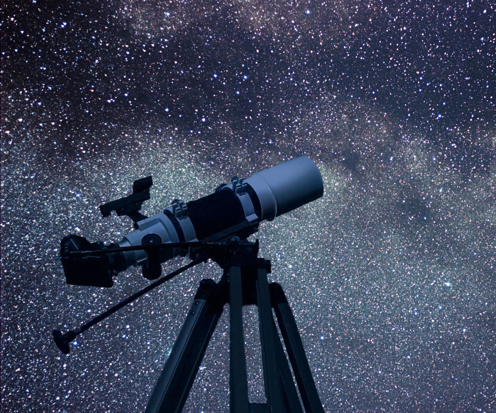

Astronomía
La astronomía es la ciencia que estudia los cuerpos celestes del universo, incluidos los planetas y sus satélites, los cometas y asteroides, las estrellas, los sistemas de materia oscura, gas y polvo llamados galaxias y los cúmulos de galaxias; por lo que estudia sus movimientos y los fenómenos ligados a ellos. La astronomía también abarca el estudio de la formación y el desarrollo del Universo en su conjunto mediante la cosmología, y se relaciona con la física mediante la astrofísica, la química mediante la astroquímica y la biología con la astrobiología
